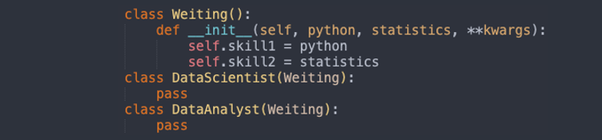

About Me
Summary
An experienced data analyst with solid Mathematics and Statistics background, having over 3-year experience in programming with R, Python, and SQL. Proactive, responsible, and organized are the top 3 characteristics best describe me. Currently pursuing M.S. in Information Technology Management at UT Dallas and seeking to leverage my knowledge and experience into a role at Data Analyst/Scientist.
Skills
Tableau
As a data enthusiasist, I was fascinated by the diverse and descent features in Tableau. I have been using either R or Python to do data visualization for a long time, I thought it's enough until I met this monster. I'm now able to make the fancy visualizations in Tableau, and still heading to the expert.
Database
Database is the essential basis of the data world. There are primary two types of storing methods, one is relational database and another is NoSQL. I'm skilled in using MySQL and MongoDB to access data with sophisticated query commands.
Programming
Saying to the programming language, I'm experienced in Python and R.
Expertise
Machine Learning
Machine learning is a great word for all the data-driven scenarios.
Statistics
With a solid training on Statistical Analysis,
Problem Solver
As I mentioned, I'm a proactive, responsible, and organized person. I love to discover the problems, fix it then refine the resluts. Some people may think that I'm kind of perfectionism, but why should I stop at 80% or 90% if I can attain 100%? Once you made a choice, persist till the last. This is me.